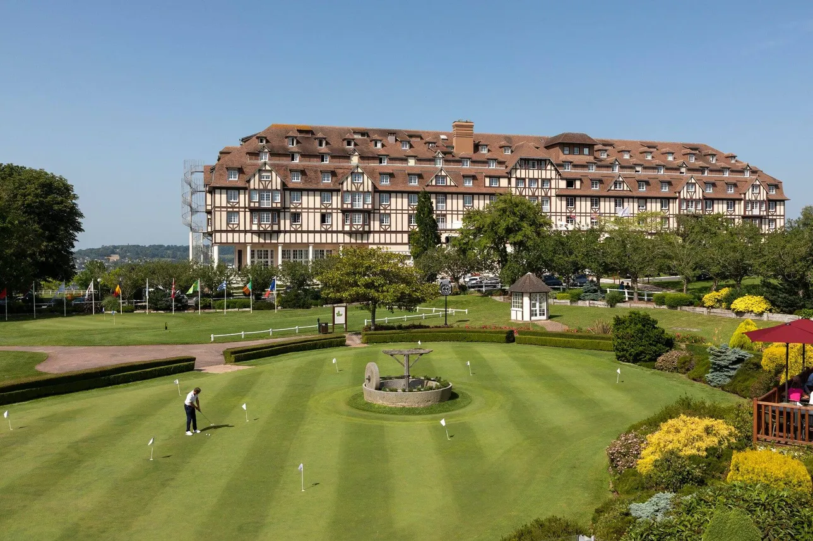
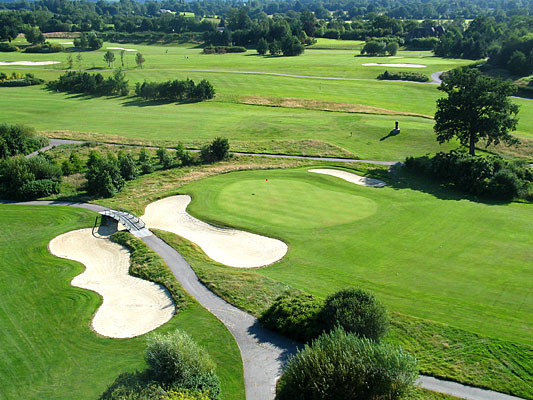

Les parcours

Golf de l'Amirauté Deauville

La Côte Fleurie et ses environs offrent plusieurs parcours de golf dans des cadres variés. Entre bord de mer, espaces boisés et paysages normands, le golf permet de profiter autrement du territoire, que l'on soit joueur régulier ou simplement curieux de découvrir cette activité.

